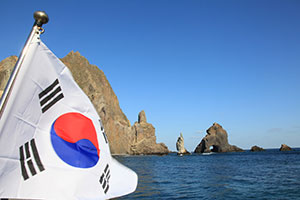
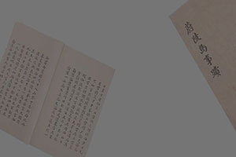
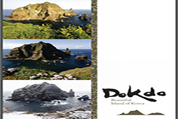
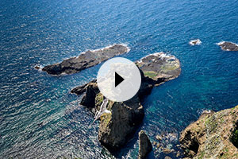

K-독도
D STORY
독도를 여행하거나 다양한 방법으로 독도를 체험하고
느낀 분들의 이야기를 보여드리며
디스토리에 소개된 분에게는 소정의 상품을 드립니다.
신청을 원하는 분들은 아래 메일이나 연락처로 연락주시기 바랍니다.
dokdo@koreadokdo.or.kr
/ 054-272-6513
COMMUNITY
공지사항
- • 독도재단 독도랑 기자단 모집
- 제4기 독도재단 독도랑 기자단 모집
독도를 사랑하고 대한민국에 거주중인
국민 또는 외국인이라면 지원 가능!
모집인원 : 20명 / 모집기간 : 2021.05.06(목) ~ 05.31(금)
발표 : 6.10 이후 공지 및 개별통보
취재 활동비 지원, / 연말 우수 기자 선정 및 시상,
독도 탐방 기회 제공 활동혜택까지!
독도랑 기자단 모집에 참여하여 독도의 이야기를 들려주세요!
- • 2021년도 제1회 (재)독도재단 사무처직원 채용 계획 공고
- 독도재단과 함께 독도영토주권 강화에 앞장 설 유능한 인재를 모집하오니
전문성과 역량을 갖춘 분들의 많은 지원을 바랍니다.
2021년 1월 20일
재단법인 독도재단 이사장
※ 채용관련 자세한 내용은 첨부파일을 확인하여 주시기 바랍니다.
- • 제4회 K-독도 공모전 개최
-
독도재단에서 대학생, 대학원생을 대상으로
SNS영상/카드뉴스/인쇄광고/캐릭터(이모티콘)
총 4개의 분야에서 제 4회 K-독도 공모전을 개최합니다.
각 분야별 대상팀에겐 200만원의 상금과 함께 독도탐방의 기회도 제공할 예정입니다!
▶ 응모자격
· 독도를 사랑하는 대학생 및 대학원생
▶ 응모방법
· 제출서류 : 1.공모전 참가신청서 2.작품 3.기 획의도·작품설명 PPT(10장 이내)
· 제출방법 : 이메일(lastuy@naver.com) 접수 ※ 메일제목 : 출품부문_팀명(ex: 캐릭터_독도사랑팀)
 이 게시판의 게시물들은 "공공누리 제4유형(출처표시+상업적 이용금지+변경금지)" 조건에 따라 자유롭게 이용이 가능합니다
이 게시판의 게시물들은 "공공누리 제4유형(출처표시+상업적 이용금지+변경금지)" 조건에 따라 자유롭게 이용이 가능합니다
REFERENCE



